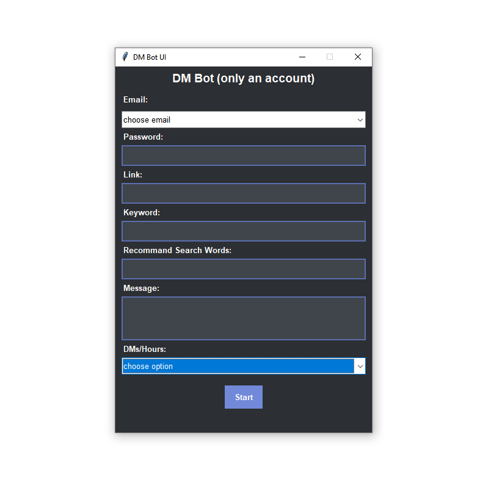
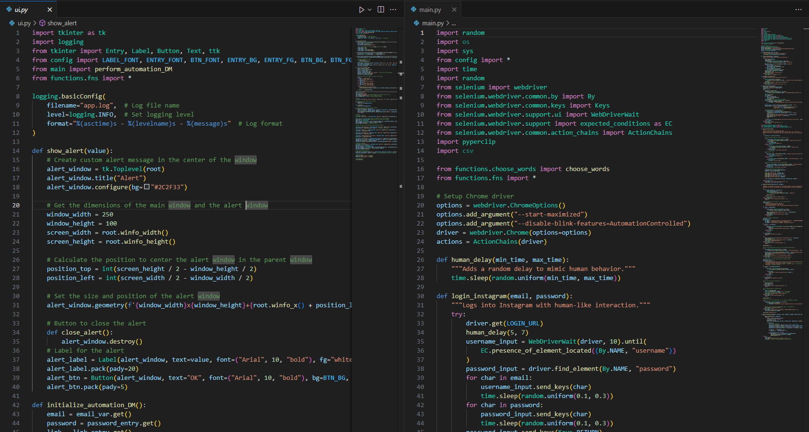
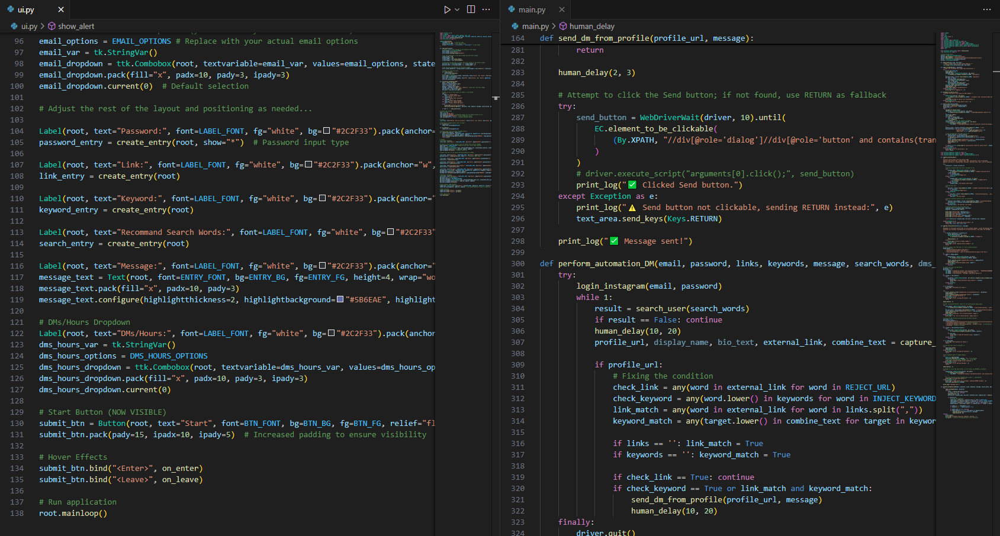

Instagram-DM-Bot



このプロジェクトは、Instagram の検索機能を活用し、特定のキーワードに基づいてユーザープロフィールを検索し、 条件に合致するユーザーに自動でメッセージを送信するボットです。 プロフィール情報はローカルデータベースに保存され、メッセージ送信後の管理が可能です。
🚀 主な機能
- Instagramへの自動ログイン（メールアドレス・パスワードを使用）
- キーワードを使ったユーザー検索
- 条件に合致したプロフィールへの自動DM送信
- プロフィール情報の取得と保存
- 一定間隔で繰り返し実行するループ処理
- Bot検出（キャプチャ）が表示された場合は、手動操作を待機
🧭 ワークフロー概要
- ログイン処理
- メールアドレスとパスワードを自動入力し、ログインボタンをクリック
- Botキャプチャが表示された場合は、手動操作を待機
- ダッシュボードが開くまで待機
- ダッシュボード操作
- 「検索」ボタンをクリック
- キーワードを検索入力欄に入力
- 検索結果から1件を選択し、プロフィールページを開く
- プロフィールページからリンクおよびキーワードを取得
- 条件一致なら「メッセージを送信」をクリックし、メッセージ入力後に送信
- ユーザー情報をローカルDBに保存
- 一定時間待機後、再度検索処理を繰り返す
💾 データの取り扱い
- メッセージ送信済みユーザーはDBに保存し、重複送信を防止
- 各処理はログとして記録
🛠 必要環境
- ブラウザ自動操作ツール（例：Puppeteer または Selenium）
- インターネット接続
- Instagramのログイン情報
- データベース環境（任意）
⚠️ 注意事項
本ツールは学習および研究目的での利用を想定しています。Instagramの利用規約に抵触する可能性がありますので、ご利用の際は自己責任でお願いします。